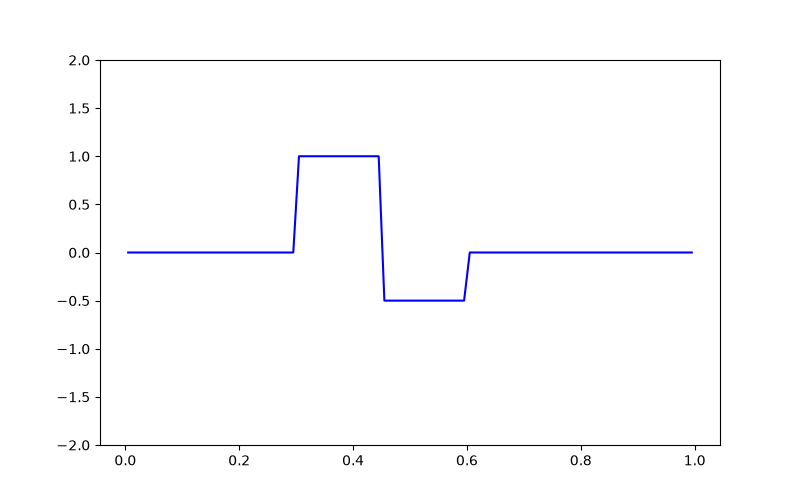
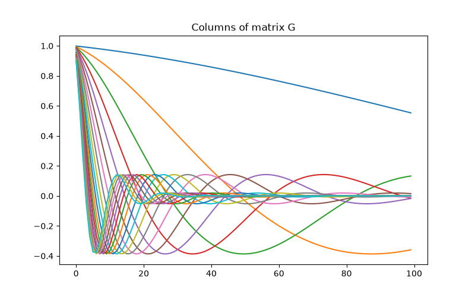
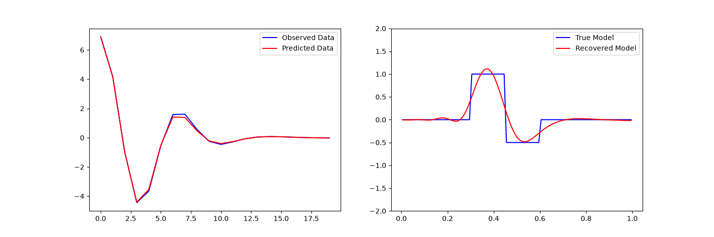

Note
Go to the end to download the full example code.
Linear Least-Squares Inversion#
Here we demonstrate the basics of inverting data with SimPEG by considering a linear inverse problem. We formulate the inverse problem as a least-squares optimization problem. For this tutorial, we focus on the following:
Defining the forward problem
Defining the inverse problem (data misfit, regularization, optimization)
Specifying directives for the inversion
Recovering a set of model parameters which explains the observations
Import Modules#
import numpy as np
import matplotlib.pyplot as plt
from discretize import TensorMesh
from simpeg import (
simulation,
maps,
data_misfit,
directives,
optimization,
regularization,
inverse_problem,
inversion,
)
# sphinx_gallery_thumbnail_number = 3
Defining the Model and Mapping#
Here we generate a synthetic model and a mappig which goes from the model space to the row space of our linear operator.
nParam = 100 # Number of model paramters
# A 1D mesh is used to define the row-space of the linear operator.
mesh = TensorMesh([nParam])
# Creating the true model
true_model = np.zeros(mesh.nC)
true_model[mesh.cell_centers_x > 0.3] = 1.0
true_model[mesh.cell_centers_x > 0.45] = -0.5
true_model[mesh.cell_centers_x > 0.6] = 0
# Mapping from the model space to the row space of the linear operator
model_map = maps.IdentityMap(mesh)
# Plotting the true model
fig = plt.figure(figsize=(8, 5))
ax = fig.add_subplot(111)
ax.plot(mesh.cell_centers_x, true_model, "b-")
ax.set_ylim([-2, 2])

(-2.0, 2.0)
Defining the Linear Operator#
Here we define the linear operator with dimensions (nData, nParam). In practive, you may have a problem-specific linear operator which you would like to construct or load here.
# Number of data observations (rows)
nData = 20
# Create the linear operator for the tutorial. The columns of the linear operator
# represents a set of decaying and oscillating functions.
jk = np.linspace(1.0, 60.0, nData)
p = -0.25
q = 0.25
def g(k):
return np.exp(p * jk[k] * mesh.cell_centers_x) * np.cos(
np.pi * q * jk[k] * mesh.cell_centers_x
)
G = np.empty((nData, nParam))
for i in range(nData):
G[i, :] = g(i)
# Plot the columns of G
fig = plt.figure(figsize=(8, 5))
ax = fig.add_subplot(111)
for i in range(G.shape[0]):
ax.plot(G[i, :])
ax.set_title("Columns of matrix G")

Text(0.5, 1.0, 'Columns of matrix G')
Defining the Simulation#
The simulation defines the relationship between the model parameters and predicted data.
Predict Synthetic Data#
Here, we use the true model to create synthetic data which we will subsequently invert.
# Standard deviation of Gaussian noise being added
std = 0.01
np.random.seed(1)
# Create a SimPEG data object
data_obj = sim.make_synthetic_data(true_model, relative_error=std, add_noise=True)
Define the Inverse Problem#
The inverse problem is defined by 3 things:
Data Misfit: a measure of how well our recovered model explains the field data
Regularization: constraints placed on the recovered model and a priori information
Optimization: the numerical approach used to solve the inverse problem
# Define the data misfit. Here the data misfit is the L2 norm of the weighted
# residual between the observed data and the data predicted for a given model.
# Within the data misfit, the residual between predicted and observed data are
# normalized by the data's standard deviation.
dmis = data_misfit.L2DataMisfit(simulation=sim, data=data_obj)
# Define the regularization (model objective function).
reg = regularization.WeightedLeastSquares(mesh, alpha_s=1.0, alpha_x=1.0)
# Define how the optimization problem is solved.
opt = optimization.InexactGaussNewton(maxIter=50)
# Here we define the inverse problem that is to be solved
inv_prob = inverse_problem.BaseInvProblem(dmis, reg, opt)
Define Inversion Directives#
Here we define any directiveas that are carried out during the inversion. This includes the cooling schedule for the trade-off parameter (beta), stopping criteria for the inversion and saving inversion results at each iteration.
# Defining a starting value for the trade-off parameter (beta) between the data
# misfit and the regularization.
starting_beta = directives.BetaEstimate_ByEig(beta0_ratio=1e-4)
# Setting a stopping criteria for the inversion.
target_misfit = directives.TargetMisfit()
# The directives are defined as a list.
directives_list = [starting_beta, target_misfit]
Setting a Starting Model and Running the Inversion#
To define the inversion object, we need to define the inversion problem and the set of directives. We can then run the inversion.
# Here we combine the inverse problem and the set of directives
inv = inversion.BaseInversion(inv_prob, directives_list)
# Starting model
starting_model = np.zeros(nParam)
# Run inversion
recovered_model = inv.run(starting_model)
Running inversion with SimPEG v0.25.2.dev29+g5b53e8cb7
============================ Inexact Gauss Newton ============================
# beta phi_d phi_m f |proj(x-g)-x| LS Comment
-----------------------------------------------------------------------------
0 1.82e+02 2.00e+05 0.00e+00 2.00e+05
1 1.82e+02 9.41e+04 6.89e-01 9.42e+04 2.43e+06 0
2 1.82e+02 6.42e+04 2.62e+00 6.47e+04 1.71e+05 0
3 1.82e+02 3.73e+04 9.45e+00 3.90e+04 1.16e+05 0 Skip BFGS
4 1.82e+02 2.54e+04 9.45e+00 2.71e+04 1.04e+05 0
5 1.82e+02 1.79e+04 1.50e+01 2.06e+04 1.89e+05 0
6 1.82e+02 9.16e+03 2.35e+01 1.34e+04 9.84e+04 0
7 1.82e+02 7.55e+03 2.37e+01 1.19e+04 1.25e+05 0
8 1.82e+02 6.67e+03 2.50e+01 1.12e+04 5.15e+04 0
9 1.82e+02 3.93e+03 2.97e+01 9.34e+03 1.47e+05 0 Skip BFGS
10 1.82e+02 3.35e+03 2.91e+01 8.66e+03 2.08e+05 0
11 1.82e+02 2.64e+03 3.16e+01 8.40e+03 9.67e+04 0
12 1.82e+02 2.23e+03 3.31e+01 8.27e+03 1.32e+05 0 Skip BFGS
13 1.82e+02 2.34e+03 3.21e+01 8.18e+03 1.02e+05 0
14 1.82e+02 2.12e+03 3.30e+01 8.14e+03 1.26e+05 0
15 1.82e+02 1.89e+03 3.40e+01 8.09e+03 1.21e+05 0 Skip BFGS
16 1.82e+02 1.98e+03 3.33e+01 8.05e+03 1.40e+05 0
17 1.82e+02 1.68e+03 3.24e+01 7.60e+03 1.29e+05 0 Skip BFGS
18 1.82e+02 1.64e+03 3.21e+01 7.50e+03 1.66e+04 0
19 1.82e+02 1.22e+03 3.37e+01 7.36e+03 2.63e+04 0 Skip BFGS
20 1.82e+02 1.24e+03 3.35e+01 7.35e+03 1.20e+04 0
21 1.82e+02 1.21e+03 3.36e+01 7.34e+03 1.76e+04 0 Skip BFGS
22 1.82e+02 1.19e+03 3.37e+01 7.33e+03 1.78e+04 0
23 1.82e+02 1.21e+03 3.35e+01 7.32e+03 1.54e+04 0 Skip BFGS
24 1.82e+02 1.22e+03 3.35e+01 7.32e+03 1.65e+04 0
25 1.82e+02 1.20e+03 3.36e+01 7.32e+03 1.86e+04 0
26 1.82e+02 1.19e+03 3.36e+01 7.32e+03 1.59e+04 0 Skip BFGS
27 1.82e+02 1.19e+03 3.36e+01 7.32e+03 1.61e+04 0
28 1.82e+02 1.20e+03 3.36e+01 7.32e+03 1.61e+04 0 Skip BFGS
29 1.82e+02 1.19e+03 3.36e+01 7.32e+03 1.42e+04 0
30 1.82e+02 1.18e+03 3.37e+01 7.32e+03 1.61e+04 0 Skip BFGS
31 1.82e+02 1.18e+03 3.36e+01 7.32e+03 1.75e+04 0
32 1.82e+02 9.91e+02 3.45e+01 7.28e+03 1.63e+04 0 Skip BFGS
33 1.82e+02 9.90e+02 3.45e+01 7.28e+03 2.00e+04 0
34 1.82e+02 9.90e+02 3.45e+01 7.28e+03 2.02e+04 0 Skip BFGS
35 1.82e+02 9.92e+02 3.45e+01 7.28e+03 2.02e+04 0
36 1.82e+02 9.81e+02 3.45e+01 7.28e+03 2.05e+04 0
37 1.82e+02 1.03e+03 3.43e+01 7.27e+03 2.07e+04 0
38 1.82e+02 9.95e+02 3.44e+01 7.27e+03 1.08e+04 0 Skip BFGS
39 1.82e+02 9.95e+02 3.44e+01 7.27e+03 2.83e+03 0
40 1.82e+02 9.99e+02 3.44e+01 7.27e+03 2.48e+03 0
41 1.82e+02 9.96e+02 3.44e+01 7.27e+03 9.07e+02 0 Skip BFGS
42 1.82e+02 9.99e+02 3.44e+01 7.27e+03 1.05e+03 0
43 1.82e+02 9.99e+02 3.44e+01 7.27e+03 6.14e+02 0
44 1.82e+02 9.97e+02 3.44e+01 7.27e+03 6.23e+02 0 Skip BFGS
45 1.82e+02 9.96e+02 3.44e+01 7.27e+03 5.38e+03 0
46 1.82e+02 9.97e+02 3.44e+01 7.27e+03 6.49e+02 0 Skip BFGS
47 1.82e+02 9.97e+02 3.44e+01 7.27e+03 8.14e+02 0
48 1.82e+02 9.97e+02 3.44e+01 7.27e+03 1.45e+03 0 Skip BFGS
49 1.82e+02 9.96e+02 3.44e+01 7.27e+03 2.03e+03 0
50 1.82e+02 9.91e+02 3.44e+01 7.27e+03 6.35e+02 0 Skip BFGS
------------------------- STOP! -------------------------
1 : |fc-fOld| = 2.9313e-02 <= tolF*(1+|f0|) = 2.0000e+04
1 : |xc-x_last| = 2.5620e-03 <= tolX*(1+|x0|) = 1.0000e-01
0 : |proj(x-g)-x| = 3.3950e+03 <= tolG = 1.0000e-01
0 : |proj(x-g)-x| = 3.3950e+03 <= 1e3*eps = 1.0000e-02
1 : maxIter = 50 <= iter = 50
------------------------- DONE! -------------------------
Plotting Results#
# Observed versus predicted data
fig, ax = plt.subplots(1, 2, figsize=(12 * 1.2, 4 * 1.2))
ax[0].plot(data_obj.dobs, "b-")
ax[0].plot(inv_prob.dpred, "r-")
ax[0].legend(("Observed Data", "Predicted Data"))
# True versus recovered model
ax[1].plot(mesh.cell_centers_x, true_model, "b-")
ax[1].plot(mesh.cell_centers_x, recovered_model, "r-")
ax[1].legend(("True Model", "Recovered Model"))
ax[1].set_ylim([-2, 2])

(-2.0, 2.0)
Total running time of the script: (0 minutes 24.395 seconds)
Estimated memory usage: 329 MB